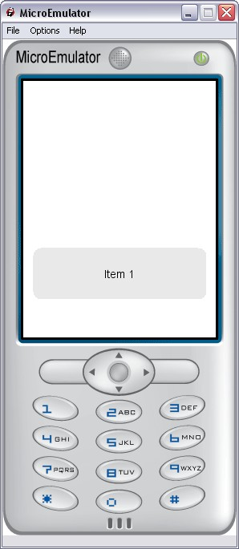

Carrousel prototype

This prototype displays any number of items in a zoom effect on the item which is selected.
Each item is composed of:
- a label
- an icon and its optional background image
- a notification and its optional icon image
In case the images use online resources, default images and error images can be defined for each item to handle failure properly.
Data fields
- MFString images - Icons of each item
- MFString labels - Labels of each item
- MFString notifs - Labels of the notifications
- MFString bgIcons - Background images placed behind the icons of each item
- MFString notifIcons - Icons of the notifications, can be used as a background image to the notification labels
- MFString defaultIcons - Default icons, displayed while the icon is loading
- MFString errorIcons - Error icons, displayed if the icon loading fails
Style fields
- SFBool cycle - If TRUE, at display carrousel as circle
- SFVec2f screenSize - Size of the screen where the application is displayed
- SFVec2f textScale - Use for scaling text if necessary (phone with small fonts)
- MFString style - Path to the CSS node associated to Carrousel proto
- MFString itemStyle - Path to the specific CSS node Carrousel Item
- MFString notifStyle - Path to the specific CSS node Carrousel Notification
- MFString panelStyle - Path to the specific CSS node Carrousel Panel
- MFString imagesStyle - Images used to display the panel background and both panel arrows (and their pressed states)
Exposed Fields
- SFBool available - Set to FALSE when a scroll animation is ongoing
- SFBool enable - Enable/disable Carrousel
- SFInt32 index - Index of the current element
Event in
- SFBool update - Update the Carrousel and position its index on the given element
- SFBool startZoom - Set to TRUE to zoom in and to FALSE to zoom out. It set to FALSE by default: the carrousel is not visible !
Event Out
- SFBool zoomFinished - Set to TRUE on end of zoom in and to FALSE on end of zoom out
- SFString activeKey - Send touchCursor event to upper prototypes
CarrouselIcon, TouchCursor